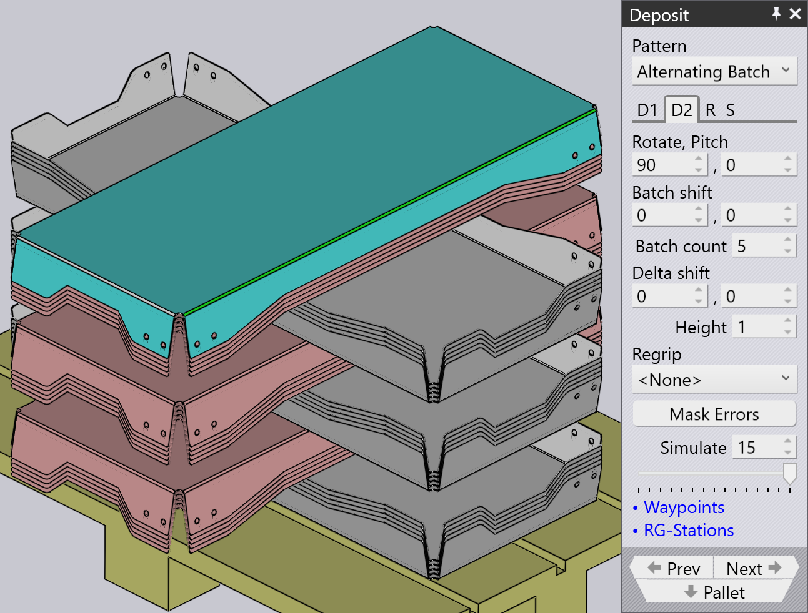
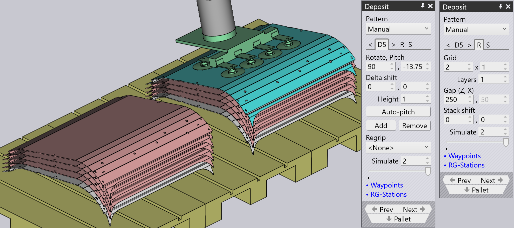

ประเภทรูปแบบการวางชิ้นงาน
Simple Grid
รูปแบบ Simple Grid เป็นรูปแบบที่ใช้กันมากที่สุดและ เพียงแค่วางชิ้นงานเป็นตารางสี่เหลี่ยมบนพาเลท
เมื่อเราใช้ตำแหน่ง Simple Grid จะมีตำแหน่งวางชิ้นงาน D1 เพียงตำแหน่งเดียวเป็นค่าเริ่มต้น

Weave
รูปแบบ Weave มีประโยชน์กับชิ้นงานที่ยาวและบาง ชิ้นงานในชั้น D2 จะถูกวางทำมุม 90° จากชิ้นงานในชั้น D1 ตาม ที่แสดงด้านข้าง


-
การตั้งค่า Weave ควบคุมจำนวนชิ้นงานที่วางเรียงกันในแต่ละ ชั้นของการวางแบบสาน
-
Gap คือช่องว่างระหว่างชิ้นงานแต่ละชิ้นภายในการวางแบบสาน
-
การตั้งค่า Grid ในแท็บ Repeat สามารถใช้เพื่อทำซ้ำการวางแบบสาน ทั้งหมดหลายครั้งบนพาเลท ในตัวอย่างนี้ การวางแบบสานถูกทำซ้ำ สองครั้ง (2 คอลัมน์ 1 แถว)
-
การตั้งค่า Gap (Z,X) ในแท็บ Repeat ใช้เมื่อ การวางแบบสานถูกทำซ้ำและระบุระยะห่างระหว่างชั้นของการวางแบบสาน
Alternating
รูปแบบ Alternating มีความยืดหยุ่นมากที่สุด ใน รูปแบบนี้ คุณสามารถควบคุมทิศทาง การพลิก และการเลื่อนสัมพัทธ์ของแต่ละ ชั้นที่สลับกัน
รูปแบบสลับให้การวางชิ้นงานที่มีเสถียรภาพมากขึ้นและกระชับขึ้น
เมื่อเราใช้รูปแบบ Alternating ตำแหน่งวางชิ้นงาน D1 และ D2 พร้อมกับ Regrip R1 จะพร้อมใช้งานเป็นค่าเริ่มต้น
| ปรับค่า Delta shift ใน D1, D2 และเพิ่ม Regrip เพื่อล็อกชิ้นงานเข้าด้วยกัน |

Alternating Batch
รูปแบบ Alternating Batch คล้ายกับ รูปแบบสลับ แต่มีความเป็นไปได้ในการวางชิ้นส่วนเป็นชุดและ สลับชั้น
Batch shift ใช้เพื่อย้ายชิ้นงานไปและมาจาก แกน Z และ X ภายในชุด
Batch count ใช้เพื่อกำหนดจำนวนชิ้นส่วน ต่อชุดต่อการวาง D1 ซึ่งสามารถอยู่ในช่วง 1 ถึง 50 ในตัวอย่างด้านล่างตั้งค่า เป็น 5
Delta shift ใช้เพื่อย้ายการวาง D1 ทั้งหมด ที่ประกอบด้วยชุดไปและมาจากแกน Z และ X


ใช้ตัวเลือก layers ในแท็บ Repeat grid (R) เพื่อ กำหนดจำนวนชุดต่อการวาง ในตัวอย่างด้านล่างตั้งค่าเป็น 2

Drop to Basket
รูปแบบนี้ใช้เพื่อทิ้งชิ้นงานเล็กๆ ลงในตะกร้าเก็บโดยใช้ กรรไกรจับแบบเครื่องกล

Conveyor
รูปแบบ Conveyor ใช้เพื่อวางชิ้นงานบน สายพานลำเลียงชิ้นงาน ตัวเลือกนี้จำเป็นเมื่อชิ้นงานที่ยาวและบางถูกวางบน สายพานลำเลียง
| เมื่อใช้กรรไกรจับแบบขากรรไกรเครื่องกลสำหรับชิ้นงานขนาดกลาง รูปแบบ อื่นๆ ทั้งหมดจะถูกปิดใช้งานสำหรับการเลือก ยกเว้นรูปแบบสายพานลำเลียง |

Inclined
รูปแบบ Inclined ใช้เพื่อวางชิ้นงานในแนวตั้ง ชิดกับผนัง (หรือพาเลทที่มีผนังด้านข้าง)
| รูปแบบนี้ไม่สามารถใช้ได้เสมอ ชิ้นงานต้องมีขนาดใหญ่พอที่จะ เป็นไปได้ สำหรับชิ้นงานเล็ก หุ่นยนต์ไม่สามารถเอื้อมลงไปต่ำพอที่จะวาง ชิ้นงานชิดกับผนัง |

Inclined pair
ประเภทรูปแบบนี้คล้ายกับรูปแบบ Alternating มาก ยกเว้นว่าชิ้นงานถูกวางในแนวตั้งเป็นคู่
Regrip เพิ่มเติมถูกนำมาใช้ใน D1 หรือ D2 เพื่อสร้างคู่
Auto-pitch กำหนดมุมเอียงของการวางโดยอัตโนมัติ
การตั้งค่า Pitch ใช้เพื่อปรับมุมเอียงของ การวางและค่า Delta shift ใช้เพื่อย้าย ชิ้นงานในแกน X และ R เพื่อทำให้การวางกระชับขึ้น


Manual
รูปแบบ Manual ใช้เพื่อวางชิ้นงานแต่ละชั้น ในทิศทางที่แตกต่างกันเล็กน้อย

-
ใช้ปุ่ม Add เพื่อเพิ่มชิ้นงานใหม่ที่ด้านบนของชั้นบนสุด
-
ใช้ปุ่มนำทาง ถัดจากแท็บ Dn เพื่อไปยังชั้นก่อนหน้าหรือถัดไป
-
การตั้งค่า Delta shift, Rotate และ Pitch สามารถใช้เพื่อปรับชิ้นงานเพื่อให้ วางอยู่บนชิ้นงานด้านล่างได้ดีขึ้น คุณยังสามารถใช้ Delta shift และคลิกที่ Auto-pitch เพื่อขอให้ TecZone Bend คำนวณ มุมเอียงที่เหมาะสมที่สุด
-
ใช้ปุ่ม Remove เพื่อลบชิ้นงานบนสุด
-
หลังจากสร้างการวางแบบแมนนวลแล้ว คุณสามารถใช้การตั้งค่าในแท็บ Repeat (R) เพื่อทำซ้ำการวางแบบเดียวกันบนพาเลท รูปภาพด้านบนแสดง การวางแบบเดียวกันที่ทำซ้ำสำหรับ 2 คอลัมน์ 1 แถวโดยมีช่องว่าง 250 มม. ระหว่างคอลัมน์
-
การตั้งค่าในแท็บ Sequence (S) สามารถใช้เพื่อควบคุมว่าชิ้นงาน ถูกวาง by layer หรือ by pile หากคุณใช้ การวางแบบกองต่อกอง ชิ้นงานทั้งหมดในกองแรกจะเสร็จสิ้นก่อนที่เรา จะเริ่มกองที่สอง